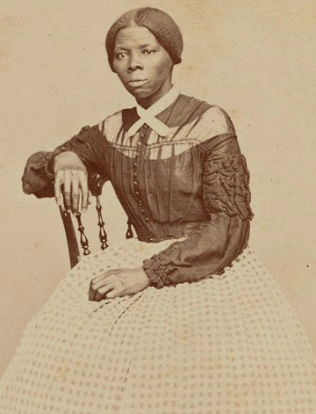
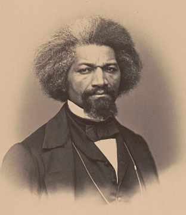
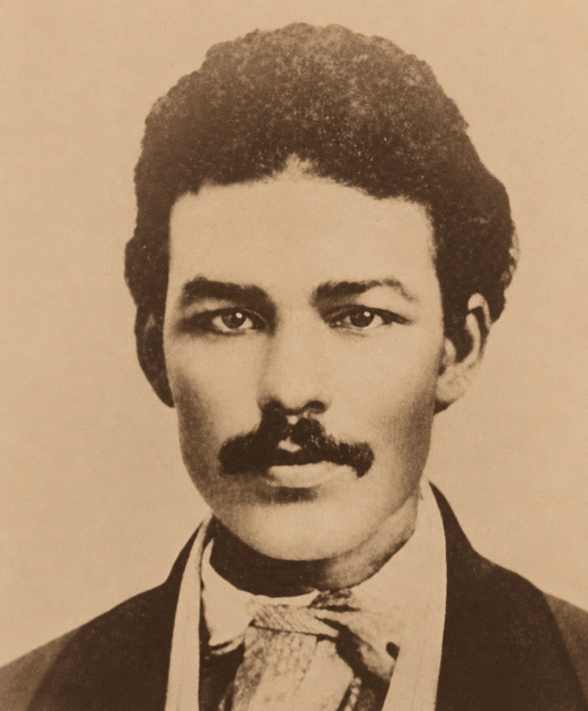
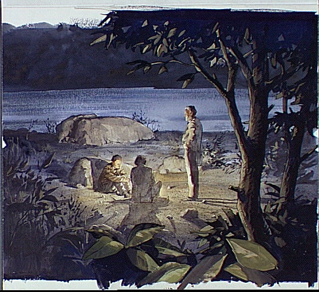

John Brown shared the goal of ending slavery with Harriet Tubman and Frederick Douglass, two of the best-known Black abolitionists in the country. They respected his commitment, but agreement about the goal did not always mean agreement about the methods—or about Harpers Ferry.
The abolitionist movement included people with very different ideas about how slavery should be destroyed.

Harriet Tubman
Brown met Tubman in St. Catharines, Canada, in 1858 and was deeply impressed by her courage, Underground Railroad experience, and knowledge of antislavery networks. He called her “General” Tubman. Brown hoped she could help recruit supporters and advise him about moving people through dangerous territory. Tubman supported his antislavery purpose, but illness kept her from taking part in the Harpers Ferry raid.

Frederick Douglass
Douglass knew Brown for years and respected the seriousness of his hatred of slavery. Brown visited Douglass's home in Rochester, New York, and talked with him about armed resistance. Douglass believed enslaved people had the right to fight for freedom, but he believed Brown's plan to seize a federal armory would end in disaster. Douglass refused to join the Harpers Ferry raid.

Shields Green
Green was a formerly enslaved man who had escaped from South Carolina and was living near Rochester. He accompanied Douglass to a secret meeting with Brown in 1859. When Douglass refused to join the Harpers Ferry raid, Green made a different choice: he stayed with Brown, fought in the raid, and was later captured and executed.
Brown called Harriet Tubman “General Tubman.” She planned to support the Harpers Ferry effort but became ill and did not take part in the raid itself.
The Secret Meeting

In August 1859, Brown met Frederick Douglass and Shields Green at an abandoned stone quarry near Chambersburg, Pennsylvania. Brown laid out the plan he had been developing in secret: seize the federal armory at Harpers Ferry, obtain weapons, and build an armed force that could help enslaved people escape and resist slavery.
Douglass thought the location made the plan especially dangerous. Harpers Ferry sat in a narrow river valley with limited ways out. Once the alarm spread, he believed militias and federal troops could surround the raiders before they escaped into the mountains. He warned Brown that the armory would become a trap.
Brown argued intensely for Douglass to join him, but he refused to abandon the plan when Douglass objected. Douglass left. Green, after hearing both men, reportedly chose to stay with Brown. Their different decisions show that even people who agreed that slavery was evil could reach very different conclusions about what risks and methods were justified.
You are Frederick Douglass. What do you do?
You believe slavery must end and that enslaved people have a right to fight for freedom. Your friend John Brown now asks you to join an attack on a federal armory. You respect Brown's courage, but you believe Harpers Ferry's location will trap the raiders and that the plan could end in disaster. What would you do?
Same Goal, Different Methods
Brown's relationships with Tubman and Douglass show why it is misleading to imagine abolitionists as one unified group with one strategy. Some worked through political parties and elections. Others relied on speeches, newspapers, petitions, legal challenges, or moral persuasion. Tubman repeatedly used direct action through the Underground Railroad, personally guiding people out of slavery.
Brown increasingly believed that armed force was necessary because slaveholders and governments were already using force to maintain slavery. Douglass could admire Brown's courage without accepting his military plan, and Tubman could support his antislavery purpose without being present at Harpers Ferry.
Years later, Douglass still praised Brown's sacrifice. Their disagreement over the raid did not erase the respect Douglass had for Brown's willingness to risk his life against slavery.
Can two people be equally committed to justice and still disagree completely about the right way to achieve it?
 The abolitionist movement included people with very different ideas about how slavery should be destroyed.
The abolitionist movement included people with very different ideas about how slavery should be destroyed.